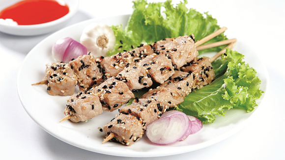

Heo nướng mè

- Khẩu phần 4
- Chuẩn bị 40 phút
- Thực hiện 15 phút
Nguyên liệu
- 400g cốt lết không xương
- 1/2 thìa súp tỏi băm
- 1/2 thìa súp hành tím băm
- 1 thìa súp mè trắng
- 1 thìa súp mè đen
- 12 que xiên
- 1,5 thìa cà phê hạt nêm từ Thịt Thăn, Xương
Ống và Tủy - Bổ sung Vitamin A
- 1/2 thìa súp nước tương
- 1/2 thìa cà phê đường cát trắng
- 1/4 thìa cà phê tiêu xay
- 1 thìa cà phê dầu mè
- 1 thìa súp dầu ăn, tương ớt
Hướng dẫn thực hiện
- Sườn cốt lết cắt miếng vuông, ướp thịt 30 phút với mè, tỏi, hành tím,
hạt nêm từ Thịt thăn và Xương ống, nước tương, đường, tiêu xay, dầu
mè, dầu ăn
- Dùng que xiên, xiên thịt cho đều, nướng chín trên lửa than, phết đều
nước ướp thịt trong khi nướng
- Rắc đều mè rang lên thịt, trang trí với xà lách. Dùng nóng với tương ớt.